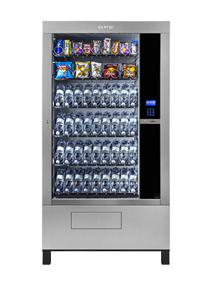
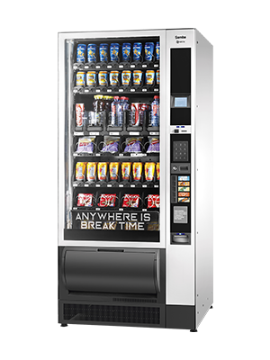

Samouslužni automati za hladne napitke
Naši automati za hladne napitke održavaju optimalnu temperaturu sokova, vode i konditorskih proizvoda.
Naši automati za hladne napitke održavaju optimalnu temperaturu sokova, vode i konditorskih proizvoda.
Izaberite automate za hladne napitke koji najbolje odgovaraju vašim potrebama

Sistem visokih performansi (HP) sa zagrevanim staklom kada se po potrebi aktivira, kako bi se izbegla kondenzacija na displeju u posebnim klimatskim uslovima i vlažnosti.

Sa svojim širokim asortimanom proizvoda, Samba nudi fleksibilno prodajno iskustvo kako bi se zadovoljile sve potrebe i ukusi korištenjem najsavremenijih tehnologija doziranja.

Ova uspešna linija snack & food strojeva ima potpuno novi dizajn i modernu grafiku. Artico je nova generacija aparata za užinu i prodaju hrane, kao i sokova, sa velikim kapacitetom za piće i namirnice.